Do not replace a part until you have a reason to suspect it.
IN THIS LESSON
✓Use symptoms to build possible causes.
✓Perform non-destructive initial checks.
✓Understand why diagnosis is a process of elimination.
VIDEO POLICY
The video will support the original lesson—not replace it. The written material, safety notes, summary and assessment remain part of the publisher content.
Start with the symptom
Write the symptom in neutral language. “The phone is dead” is less useful than “the display remains black, there is no vibration, and the device shows no visible charging response with a known-good charger.” Precise observations reduce assumptions.
Ask what changed before the problem appeared: impact, liquid exposure, a previous repair, battery swelling, a software update or gradual degradation. History does not prove the cause, but it helps prioritize checks.
Use known-good external factors
Before opening a device, eliminate simple external causes when safe to do so. Verify the cable and power adapter with equipment you know works and inspect the charging port externally for obvious damage or contamination. Never insert conductive objects into an energized port.
If the device partially functions, test the symptoms systematically. For example, if the screen is black but the phone produces sounds or vibration, that evidence changes the diagnostic path compared with a device that shows no signs of power at all.
Evidence before parts
Replacing parts at random can introduce new variables. A better workflow is symptom → hypothesis → safe test → evidence → next decision. Keep notes. If your checks begin to require board-level measurements, battery manipulation or procedures beyond your training, stop and escalate to a qualified technician.
Good diagnosis is often the difference between repairing the actual fault and spending money on components that were never defective.
LESSON SUMMARY
Describe symptoms precisely, eliminate simple external factors and use evidence to guide the next step instead of swapping parts at random.
MODULE 06
Ready to mark this lesson complete?
Your progress is saved locally on this device during development.
What this lesson is really teaching
This module is designed to build practical understanding of connector alignment, cable routing, bracket and screw placement, adhesive considerations, housing closure and staged reassembly. The goal is not to memorize a list of actions. A capable beginner needs to understand why a step exists, what evidence to look for, what can go wrong, and when the safest decision is to stop. Smartphone repair changes from model to model, so the strongest transferable skill is a disciplined process: identify the exact device, observe the symptom, protect the device and yourself, document what you do, make one controlled change at a time, and test the result. That process is more valuable than copying a sequence from a random video because it remains useful when the layout, fasteners, adhesives, connectors or symptoms are different.
Before you touch the device
Begin with information, not tools. Record the model, visible condition, reported symptom and any history that is known. If the phone is functioning, note important features that currently work so they can be checked again later. Look for cracked glass, bent frames, liquid indicators, unusual heat, odor, swelling or evidence of a previous repair. A swollen or damaged lithium-ion battery is not a normal practice item. Do not puncture, bend, crush, heat or improvise around it. Work on a stable, well-lit surface away from liquids, clutter, metal scraps and flammable materials. Keep screws and brackets organized by location because a screw that looks similar can have a different length or purpose.
Think like a diagnostician
A common beginner mistake is deciding which component to replace before confirming the fault. Instead, describe the symptom precisely. Does the device fail to power on, fail to charge, show an image but ignore touch, restart under load, lose audio, or behave intermittently? Different symptoms point toward different systems, and more than one cause can produce a similar complaint. Good diagnosis is a sequence of observations and safe tests. Write down what changes after each test. If a step produces no new evidence, do not pretend that it did. This habit reduces unnecessary part swapping and makes the learning process repeatable.
Model-specific information matters
This course teaches foundations that transfer across many Android phones, but it is not a substitute for service information for the exact model in front of you. Manufacturers revise internal layouts, connector positions, screw types, adhesive patterns, sealing methods and calibration requirements. Before a physical procedure, compare the device with reliable model-specific documentation. If the real device does not match the visual guide, stop and verify the model rather than forcing the next step. A professional repairer treats a mismatch as useful information, not as an obstacle to push through.
Controlled hands-on practice
When practicing connector alignment, cable routing, bracket and screw placement, adhesive considerations, housing closure and staged reassembly, slow movement is a feature, not a weakness. Position the device so you can see the area clearly. Support parts instead of letting them hang from flex cables. Use the correct driver and keep it aligned with the fastener. Use non-metal opening tools where appropriate and keep insertion shallow unless model-specific documentation explicitly shows otherwise. Never use additional force simply because a component has not moved. Resistance can indicate a hidden screw, adhesive, a bracket, a cable or an incorrect assumption. Pause, inspect and reassess.
How to read the step-by-step visuals
The illustrations beside the steps are learning aids. Read the text first, then inspect the visual, then explain the action to yourself before performing anything on a real device. Ask three questions: what am I trying to accomplish, what part must be protected, and what would make me stop? This turns a picture from decoration into a decision-making tool. For exact physical repairs, supplement the learning illustration with properly licensed photographs or authoritative model-specific references that show the actual hardware.
Mistakes beginners should avoid
Avoid mixing screws, pulling on flex cables, prying deeply without knowing what is underneath, working while the device is powered, using excessive heat, improvising with unsuitable metal tools, and assuming that every phone opens the same way. Another important mistake is testing only the repaired feature. A successful repair can still introduce a new fault elsewhere. Final testing should cover the systems that were disturbed during the work as well as the original complaint. If a device behaves unexpectedly after reassembly, do not repeatedly force it closed; reopen methodically and inspect your last changes.
Build a repeatable workflow
Use the same high-level workflow every time: intake and identify, inspect, make safe, document, diagnose, plan, perform the minimum justified intervention, reassemble carefully, test, and record the outcome. Repetition of a good workflow builds confidence without encouraging overconfidence. Confidence in repair should come from evidence and successful checks, not from speed. Speed develops naturally after correct habits become consistent.
What competence looks like after this module
After studying this lesson, you should be able to explain the core ideas behind connector alignment, cable routing, bracket and screw placement, adhesive considerations, housing closure and staged reassembly without reading from the page. You should be able to describe the safety checks you would perform, identify the information you still need for a specific model, organize a basic work sequence, and recognize situations that exceed beginner-level practice. Being capable does not mean attempting every fault. A capable learner knows both how to proceed and when professional equipment, board-level expertise, battery handling procedures or manufacturer-specific service information are required.
Practice exercise
Use a powered-off practice device or a non-invasive observation exercise. Write a short intake note containing the exact model, visible condition and reported symptom. Create a simple screw/parts map on paper. Without opening the device, identify where you would search for model-specific instructions and list the safety questions you need answered first. Then describe your planned sequence in your own words. This exercise may seem simple, but it trains the planning discipline that prevents many avoidable mistakes.
Knowledge check before moving on
Before marking the lesson complete, answer these questions in your own words: Why should you identify the exact model before following a repair procedure? What kinds of resistance should make you stop rather than apply more force? Why is a record of pre-repair functions useful? What is the difference between observing a symptom and guessing a failed component? Which situations would make you seek qualified assistance? If you cannot explain the reasoning, review the relevant section before continuing.
Safety and scope reminder
Smartphone repair can involve sharp broken glass, heat, electricity, chemicals and lithium-ion batteries. Damaged batteries can create serious fire and injury hazards. This educational material does not make every procedure appropriate for every learner or device. Do not perform work that exceeds your training, tools, workspace or ability to control the risk. For board-level work, severely damaged batteries, unknown liquid damage or other high-risk conditions, use qualified professional assistance and appropriate service procedures.
Why documentation improves repair quality
Documentation creates a baseline and makes troubleshooting less dependent on memory. Before service, note the complaint and condition. During service, record unusual findings and the location of parts that may be easy to confuse. After service, record the tests performed and their results. Photos can be useful when legally and appropriately taken, especially for cable routing and bracket placement. A simple record also helps you learn from mistakes: if the same type of fault appears again, you can compare evidence instead of starting from zero.
Accuracy is more important than speed
Online repair videos often compress a long job into a few minutes, which can create the false impression that a beginner should move quickly. Editing removes pauses, inspections, tool changes and failed attempts. In real learning, those pauses are valuable. Take time to confirm alignment before pressing a connector, to inspect a screw before turning it, and to compare the device with the reference before lifting a part. A slow correct action is far cheaper than a fast damaged connector, torn cable or punctured battery.
Use the video as reinforcement, not a substitute
Each module is designed around one focused video because the learner should not need to jump through a playlist to understand the core lesson. Watch the video once for the overall flow, study the written explanation and visuals, then watch relevant portions again while reviewing the sequence. The video is a complementary perspective. The written material provides searchable reasoning, safety notes and details that are easy to miss in motion. Learning through all three formats improves the chance that you can recall the process later without copying the instructor mechanically.
How to know you are ready for the next module
Do not use page completion alone as proof of learning. You are ready to move forward when you can summarize the lesson, identify the major risks, explain the order of operations and correctly answer the knowledge check. For practical topics, you should also be able to prepare the workspace and demonstrate the low-risk parts of the workflow without prompts. If you are uncertain, repeat the lesson. Repetition is free, and there is no benefit in rushing into a more difficult procedure with weak fundamentals.
Module 06 completion checklist
Before continuing, confirm that you can state the lesson objective, describe the main hazards, explain the workflow in order, identify which details require exact-model documentation, and describe how you would verify that the device still works correctly after the intervention. Keep your answers specific. “Be careful” is not a useful safety plan; name what you are protecting and what observation would make you stop. “Test the phone” is not a useful test plan; name the functions affected by the work and the original symptom. This level of specificity is what turns information into a usable skill.
100% FREE LESSON
Learn it three ways — at no cost
This lesson combines a detailed written explanation, step-by-step visuals placed beside the instructions, and one focused video lesson. The goal is not just to finish the page — it is to understand the workflow well enough to explain it back and practice it safely.
READClear written reasoning and safety context.
SEEVisuals directly beside each step.
WATCHOne complete video — no playlist overload.
ONE COMPLETE VIDEO LESSON
Watch the lesson
Video slot prepared for this exact lesson
Before publication, embed one high-quality video that directly matches this module. The video will complement — not replace — the original written and visual lesson.
STEP-BY-STEP VISUAL GUIDE
Reassembly
Follow the explanation and visual together. These fundamentals are intentionally model-neutral; real disassembly or component replacement must use instructions for the exact device model.
STEP 01
Reconnect carefully
Align connectors squarely before applying gentle pressure.
Practice note: Work slowly. If the device layout does not match the lesson, stop and verify the exact model.

STEP 02
Route flex cables correctly
Keep cables in their intended channels without folds or pinching.
Practice note: Never substitute force for the correct tool or procedure.
STEP 03
Close without force
If the housing resists, reopen and find the obstruction.
Practice note: Keep a simple written record of what you observed before moving to the next step.
What you should be able to do after this lesson
Explain the purpose of the steps in your own words.
Recognize the main safety or quality risks covered here.
Apply the workflow to a supervised or appropriate practice scenario.
Know when model-specific documentation or professional assistance is required.
Safety: Do not treat a generic lesson as a model-specific service manual. Lithium-ion batteries, damaged devices, mains-powered equipment and board-level work can create fire, electrical or chemical hazards. Stop when the procedure exceeds your training, tools or safe workspace.
FREE DOWNLOAD • INCLUDED AT NO COST
Save this lesson as a free PDF
Finished studying? Download the lesson handout completely free and keep it on your phone, laptop or computer for review whenever you need it.